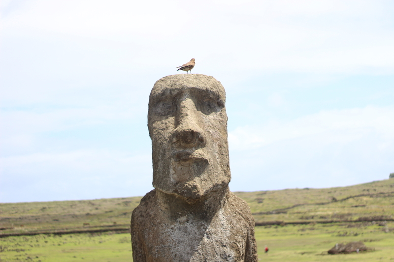
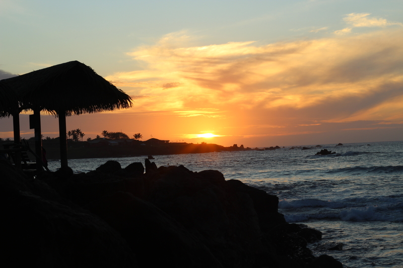
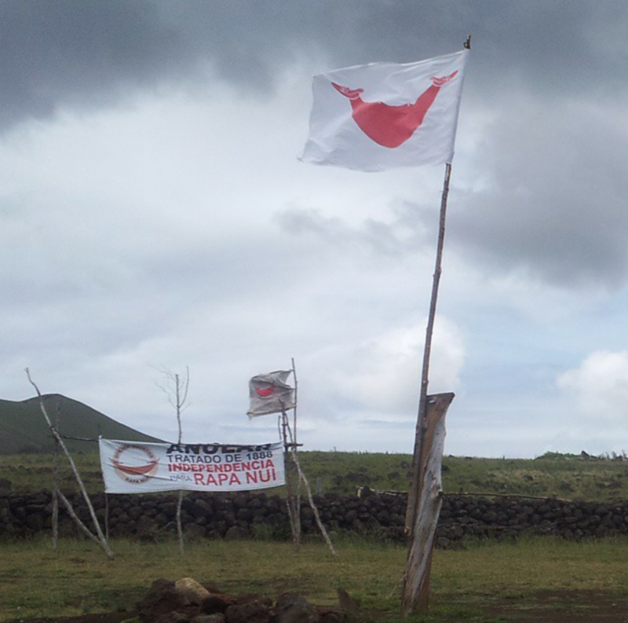
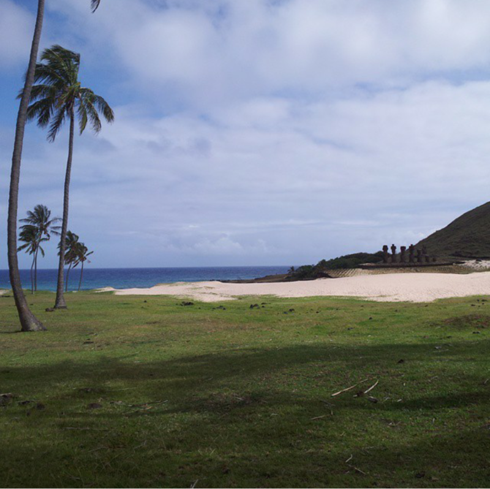
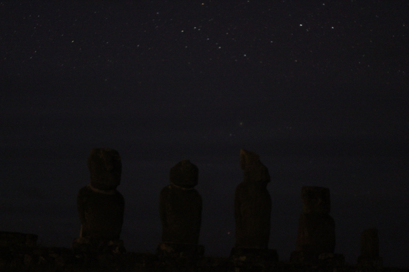

We are travelling around the islands of Polynesia.
Easter Island is the loneliest inhabited place in the world. The nearest solid land the inhabitants can see is in the firmament, the moon and the planets. They have to travel further than any other people to see that there really is land still closer, therefore they live nearest to the stars and know more names of stars than of towns and cities iin our own world. On this remote islan, east of the sun and west of the moon, mankind had one of its most curious ideas. No one knows who had it and no one knows why. (...) They landed here, whetted their stone axes and set about one of the most remarkable engineering projects of ancient times. - Thor Heyerdahl

I've read those words as a child and dreamed of Rapa Nui ever since. And it was all I thought it would be. Well, almost. i thought mabe I can see clear skies full of stars here - but it turned out it's actually in a moderate climate and most of the time it's cloudy. But it was the perfect way to be so far away from the rest of the world I may as well be on another planet. I wouldn't find that feeling again until French Polynesia.

Now, if you're curious about practical information about Rapa Nui - it's a great place to be alone, but not really a backpacker destination. You can see that right at the departure gate at the Santiago airport. Hippie backpackers you normally see in South America disappear, and out of nowhere there are 60+ trevellers with very expensive cameras. On the island there are camping sites and budget accomodations to be found - if you don't want to book in advance, just pop by to the touris information spot in Hanga Roa. It's by the main road in the direction of the airport, where the cash machines are. The whole place is tiny, you won't miss is. If you are a do something all the time kind of traveller, there will be enough stuff to do for about 3-4 days. If you want to just get far away from everything, the sky is the limit. Literally. My most memorable day was when I went around the entire island on a bike. It was quite taxing for me, but the best way to truly appreciate every little bit of the coast, and find the remote moai. If you want to see the caves where the rongo-rongo tables were found, you'll need a guide. There's also a few good hiking opportunities and museums, and definitely go to a dance show at least once. There's great energy there.


What surprised me there, is that unlike the rest of the Polynesian triangle the Rapa Nui climate is not exactly tropical - it's quite a bit further south. And you can see a lot of plants you may know from, say, Europe like clovers. It also means the sku may be cloudy quite a bit of the time. I had hoped the sky would be full of stars, with no light polution. But it was never quite clear enough for that.
